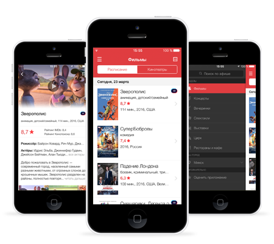
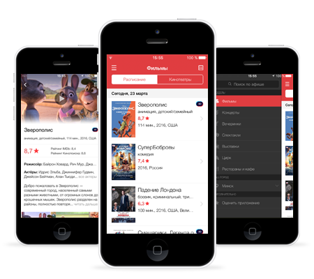
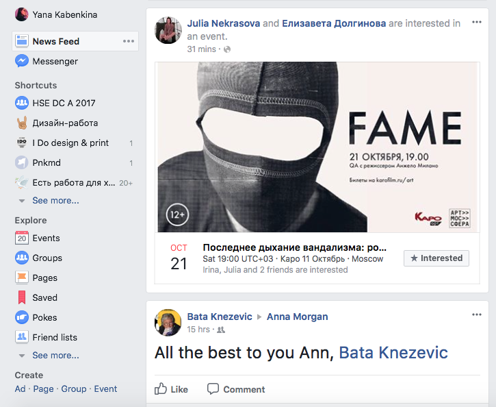
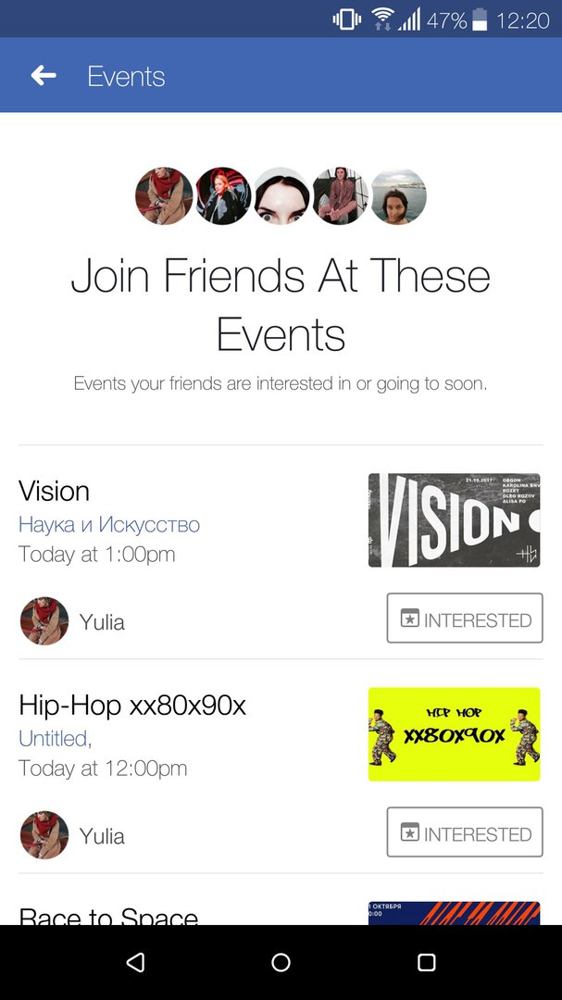
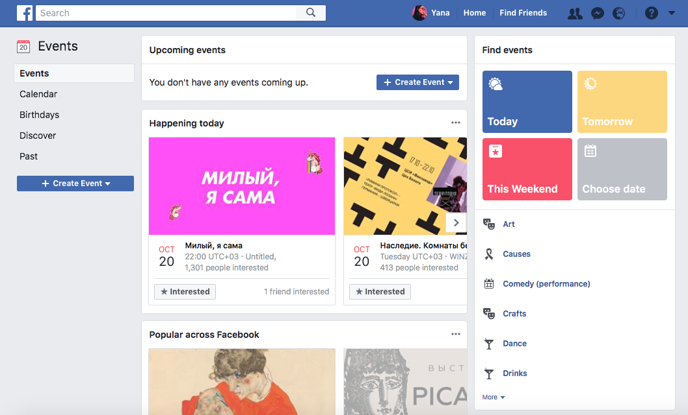
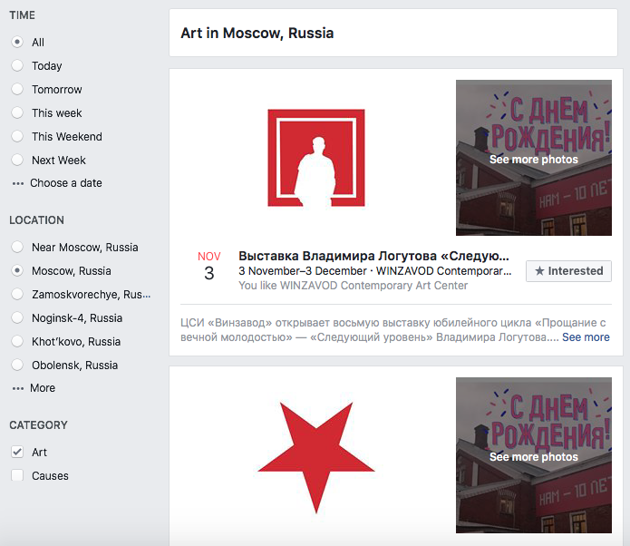

Мы живём в огромном энергоинформационном пространстве и каждый день сталкиваемся с нескончаемыми потоками информации. В Москве постоянно что-то происходит: открываются выставки, появляются новые пространства, проходят кино и театральные премьеры, открываются рестораны и бары.
Чтобы найти по-настоящему интересное культурное событие, приходится просматривать очень много разных источников. Зачастую на это просто не хватает времени, да и потенциально интересное событие в большом информационном потоке можно просто не заметить. Кроме того, чем больше источников отслеживаешь, тем больше сталкиваешься с информационным мусором. Поэтому необходимо фильтровать получаемую нами информацию.
Проект, над которым я буду работать, позволит пользователям самостоятельно применять фильтры и получать персональную подборку культурных событий, которые будут интересны именно им.
Целевая аудитория проекта – активные, современные молодые люди и девушки, которые всегда хотят быть в курсе происходящего вокруг, следят за модой и идут в ногу со временем.
Афиша.ру / приложение Афиша – самый популярный ресурс в нише досуга и довольно удобное приложение. Но, как заявляет сама Афиша, это – “Все развлечения вселенной”, а значит человек снова вынужден просмотреть большое количество событий, чтобы выбрать для себя что-то по-настоящему интересное.
 

Facebook – также имеет раздел events и предлагает мероприятия, которыми интересуются друзья. Однако в ленте мероприятия просто теряются из-за огромного потока информации от друзей, групп и страниц, а в разделе events система фильтрации довольно скудная.
   Идея проекта заключается в том, чтобы создать сервис, который будет анализировать разные источники, включая афишу, timepad, kudago и прочие ресурсы и, благодаря хэштегам и фильтрам, будет показывать пользователю персональную подборку событий, соответствующую его интересам и предпочтениям.
Кроме того, приложение будет полезно промоутерам, котрые смогут добавлять свои события.
Таким образом, я создаю приложение для двух типов пользователей: обычного человека и промоутера.
Можно добавить возможность интеграции с календарём, добавления событий в избранное, а также добавления отзывов. Эти функции можно будет включать/выключать в настройках профиля по желанию.